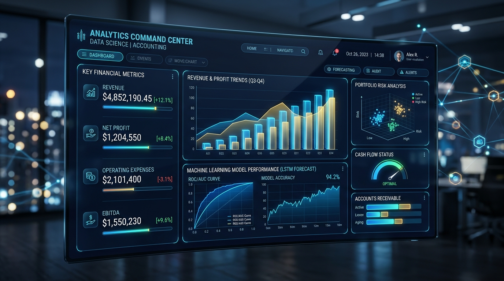

AI / ML
HR 데이터 기반 사원 승진(Promotion) 머신러닝 예측 시스템
500명 규모의 실증 인사 데이터를 활용하여 결측치 정밀 대체, 상관분석, Random Forest 및 LightGBM을 통한 이진 분류 파이프라인을 구축했습니다.
F1-Score 0.879 (LightGBM)
SHAP 변수 중요도 도출
주관적 직관에 의존하지 않고 데이터로 입증하며, 디테일한 세무/회계 검증력과 성실한 협업 태도로 조직에 신뢰를 더하는 파트너가 되겠습니다.
경영학적 거시적 시야와 세무/회계의 미시적 정밀함, 그리고 AI 자동화 역량을 하나로 결합합니다.
세무/회계 데이터는 단 1원의 오차도 허용되지 않습니다. 데이터 분석 시 결측치 전처리부터 AI 프롬프트 생성 결과물까지 다단계 크로스체크를 수행하여 오류율을 최소화합니다.
본래 잠이 많은 편이었으나, 이를 단점으로 남겨두지 않고 6시 반 기상 루틴과 포모도로(Pomodoro) 딥워크 시간표를 철저히 적용하여 오히려 높은 오전 몰입 집중도를 확보했습니다.
이론적 기초 위에 실무적 데이터 감각을 더해온 여정입니다.
기업 경영의 전반적인 의사결정 체계와 회계 투명성의 가치를 학습하며, IT 기술과 데이터 분석을 경영에 접목하는 융합적 시각을 체화하였습니다.
500명 규모의 실증 기업 데이터셋을 기반으로 HR 승진 예측 모델 및 급여 회귀 분석 시스템을 개발하고, 전체 분석 워크플로우를 자동화하는 파이프라인 완성.
기업 전표 작성 시 발생하는 반복 업무를 LLM 프롬프트와 규칙 기반 시스템으로 자동화하는 기법을 연구하고 마크다운 기술 문서로 정리.
실제 분석 코드와 결과 리포트가 수반된 정밀한 포트폴리오입니다.

500명 규모의 실증 인사 데이터를 활용하여 결측치 정밀 대체, 상관분석, Random Forest 및 LightGBM을 통한 이진 분류 파이프라인을 구축했습니다.
경력, 성과점수, 연령을 기반으로 다변량 선형회귀 모델을 수립하고, 기업 4대 보험 및 근로소득세 공제 시뮬레이션을 연계 분석하였습니다.
[차변] 접대비 130,000 / 부가세대급금 13,000
[대변] 미지급금(카드) 143,000
// AI 자동 분개 제안 완료 (일치율 96.4%)자연어 거래 텍스트로부터 K-IFRS 기준 차/대변 계정과목을 매핑하고 부가가치세 매입세액 공제 요건을 판단하는 AI 프롬프트 파이프라인.
사회성, 기술 역량, 심리적 만족도 항목을 요인분석(Factor Analysis)으로 축약한 뒤, 비지도학습 군집화를 통해 유형별 인재 그룹을 도출.
이 웹사이트는 마크다운(.md) 문서를 실시간 파싱하여 렌더링하도록 구축되었습니다. 기획서 원문과 기술 보고서를 직접 읽거나 로컬 .md 파일을 불러와 테스트해보세요.
정교한 연주에서 얻는 집중력과 심리적 안정은 데이터 분석의 디테일을 유지하는 원동력입니다.
복잡한 다성음악(Polyphony)을 연주할 때는 양손의 독립적인 통제와 전체적인 화음의 조화가 요구됩니다. 이는 다양한 팀원들과 역할을 나누고 조율하는 협력적 리더십, 그리고 장시간 몰입을 유지하는 지구력을 기르는 데 큰 도움이 되었습니다.
가장 명료한 아침 시간, 당일 집중해야 할 프로젝트의 마일스톤을 확정합니다.
AI 모델링 하이퍼파라미터 튜닝, 세무 전표 로직 검증 등 고집중 분석 업무 수행.
팀 프로젝트 피드백 교환, 스터디 참여 및 경영학 강의 수강.
음악으로 멘탈을 리프레시하고 오늘의 학습 및 코드 내용을 마크다운으로 회고.